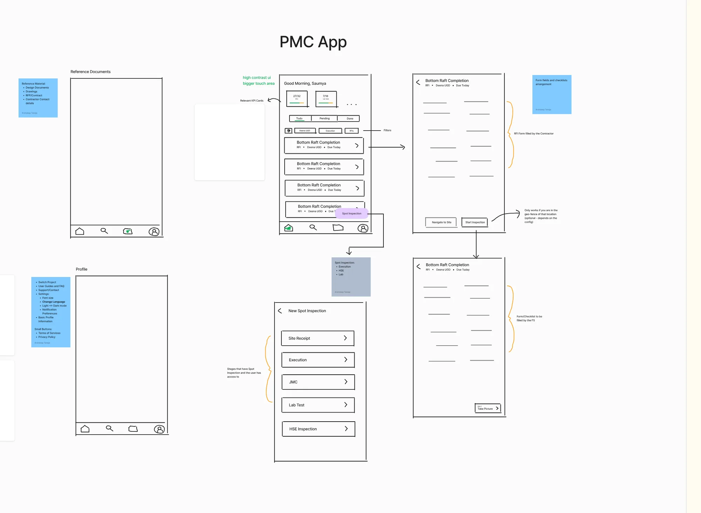
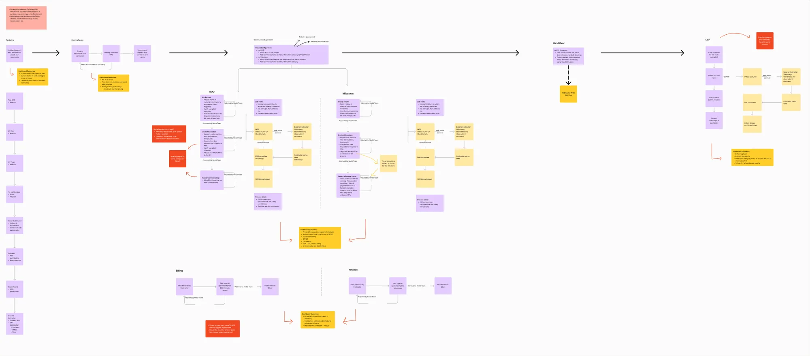
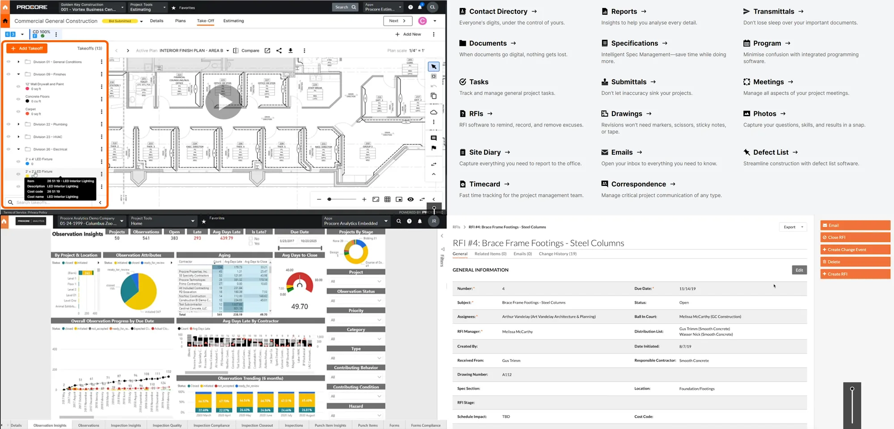
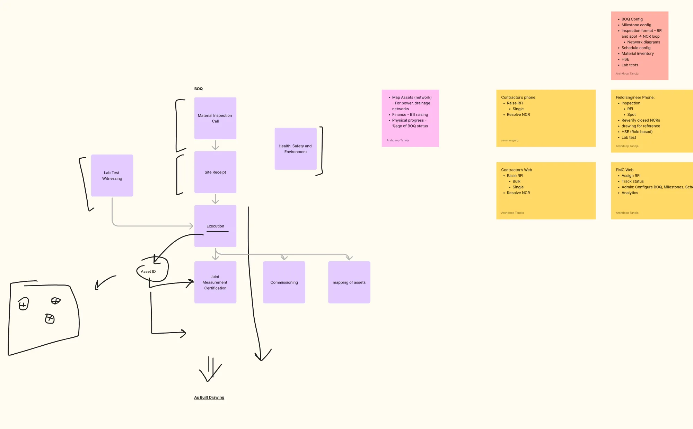
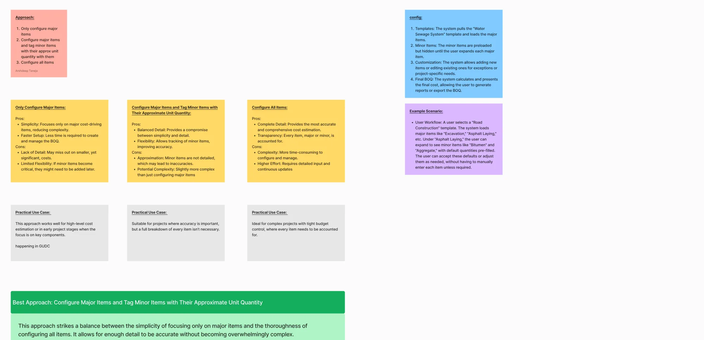
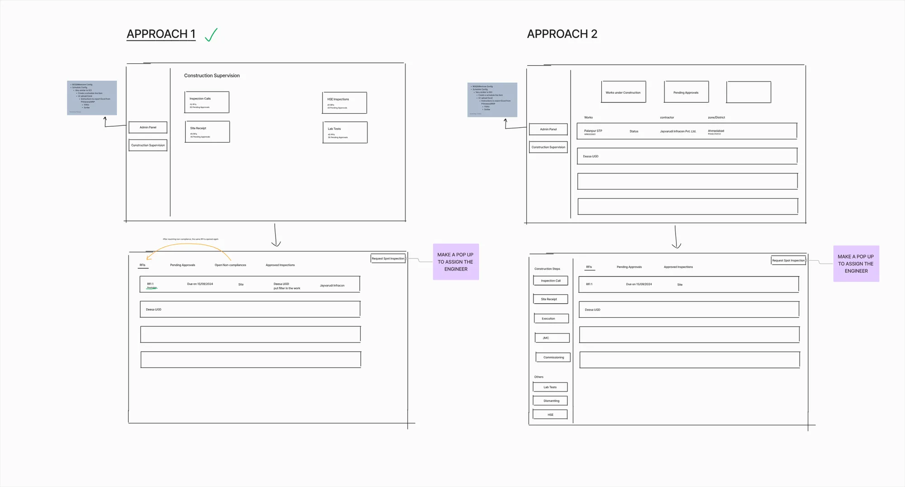
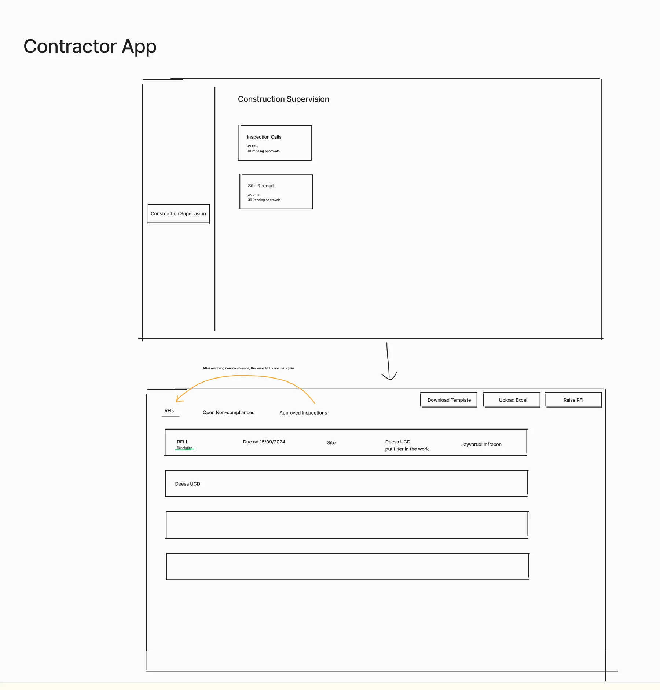

Debound · B2B SaaS for construction PMCs · UX case study
Construction SupervisionOne loop between the site and the office
A project management consultant (PMC) is paid to make sure public works are built on time, within cost and at quality. Their proof lives in inspections, RFIs and non-compliance reports that today travel by phone, email and paper. I designed the field app and web console that bring all of it into one traceable loop, tied to the bill of quantities so that every approval also counts as progress.
Read the case study
- UsersPMC field engineers, PMC office teams, contractors
- PlatformsField phone app, contractor web and phone, PMC web console
- DomainGovernment water supply, sewage treatment and drainage works
- My roleUX design intern: research, flows, information architecture, wireframes
- CompanyDebound, building software for a PMC firm
Empathize
Learning a domain I had never worked in: who pays whom, who checks whom, and where the paper trail breaks.
The ecosystem
Three parties, one public project, and the PMC in the middle
A government agency funds the work, a contractor builds it, and the PMC is hired to watch over the contractor on the agency's behalf. Before drawing a single screen I sketched this triangle to understand whose tool this was, and whose trust it had to earn.
- AgencyThe client authority. Releases payments when the PMC certifies that a stage is done. Wants visibility, not more reports.
- PMCOur user. Inspects quality against drawings and the contract, verifies running bills, raises non-compliances. Measured on time, cost and quality.
- ContractorBuilds the works. Requests inspections (RFIs) before moving to the next stage, fixes non-compliances, raises bills.
Secondary research: contracts and RFPs
Reading the contracts told us what the software actually has to prove
We studied the terms of reference and RFPs for the PMC's water and power programmes. They spell out the PMC's job line by line, and every line is a feature waiting to be designed.
Before construction
Review the project report, study the site, build the schedule in MSP or Primavera, check structural and hydraulic designs, and approve drawings (our second product, Drawing Review).
During construction
Inspect quality against drawings, witness lab tests, verify the source of material, raise non-compliances with punitive action, and verify contractors' running bills within seven days.
After construction
Collect geo-referenced as-built drawings, write SOPs and maintenance manuals, inspect every two weeks during the defect liability period, and approve the final bill.
What the client said success looks like
- Real-time physical and financial progress against the schedule
- Real-time material inventory across all sites
- Non-compliance reporting that feeds a vendor quality score
- Bills verified within 7 days, only on unique, verified items
- Adherence to the construction supervision SOPs
- Turnaround times kept during the defect liability period
Mapping the project lifecycle
From tender to defect liability, on one board
We mapped a public works project end to end: tendering, drawing review, construction supervision, billing and finance, handover and the defect liability period. For each phase we noted what happens, who approves it, and the dashboard outcome it should produce. Construction supervision turned out to be the busiest phase by far, and the one where most money changes hands.

Competitive benchmark
What Procore gets right, and why it doesn't fit an Indian PMC
Procore is the reference product for construction management. We went through its RFIs, observations, drawings and analytics to borrow good patterns and spot the gaps.

Borrow
An RFI is a record with an owner, a due date and a "ball in court". Analytics that show who is late and why. A clear separation of tools by job.
Gap
It's built for a general contractor. Our user is the consultant checking the contractor, and Indian public contracts pay by BOQ items and milestones, not by tasks.
Gap
Dozens of tools is a lot for a field engineer on a phone in the sun. The RFI tool already used on one of the client's programmes had a bigger flaw: its RFIs weren't linked to the BOQ, so they couldn't show the real progress billing needs.
Personas proto-personas, from the roles on our board
Three people, three devices, one record
The roles and jobs below come from the role and device split on our research board. The quotes are illustrative.
The field engineer
PMC, on site, phone first
"Tell me which inspections are due today, and let me finish them standing at the pit."
- Does
- RFI and spot inspections, re-verifies closed non-compliances, witnesses lab tests, HSE checks.
- Needs
- Drawings for reference on site, checklists, photos, works offline-tolerant, high contrast and big touch targets.
The PMC office lead
Head office, web console
"I need to see every site from here, and know who is holding things up."
- Does
- Assigns RFIs to engineers, tracks status, configures the BOQ, milestones and schedule, reports to the agency.
- Needs
- Progress against schedule, pending approvals, open non-compliances, accountability per person.
The contractor's engineer
Contractor, web and phone
"I can't pour the next slab until this inspection is approved."
- Does
- Raises RFIs one at a time or in bulk, resolves non-compliances, submits bills.
- Needs
- Fast RFI raising, a clear status, and to know exactly what to fix.
Define
Narrowing a whole industry down to one loop the product has to get right.
Problem statement
PMCs certify progress and quality from scattered calls, emails and paper, so nobody can see real progress, and bills take longer to verify than the contract allows
- How might welink every inspection to the BOQ item or milestone it proves, so approvals add up to progress and billing?
- How might welet a field engineer finish an inspection on site, with checklist, photos and location, in minutes?
- How might weclose the loop on non-compliances so nothing is approved until the fix is verified?
Key insights
Projects aren't all paid the same way
Some contracts pay per BOQ item, others per milestone (a share of the contract price, pro-rata or on completion). Same supervision, different maths, so the tool has to be configured per project.
Each stage has its own check
Material inspection, site receipt, execution, joint measurement and commissioning each need a different form, and some need an RFI from the contractor, a spot inspection by the PMC, or both.
Non-compliance is a loop, not a status
When an inspection fails, the contractor fixes it and the same RFI reopens for re-verification. If the loop breaks, defects slip into the bill.
Design goals
- LinkedEvery RFI points at a BOQ item or milestone, so progress is computed, not reported.
- Role-shapedEach role sees only its jobs, on the device it actually uses.
- Field-firstHigh contrast, big touch areas, photos and geo-fencing on the phone.
- ConfigurableBOQ, milestones, stages and forms set up per project, from templates.
Ideate
Modelling the work before designing the screens: stages, roles, the BOQ, and two dashboard layouts.
The construction stages
Every BOQ item moves through the same five checks
We broke supervision into the stages an item passes through on site. Lab test witnessing and health, safety and environment checks float alongside, not in sequence. Joint measurement certification is where quantities get signed, and the as-built drawing comes out at the end.
- Material inspection call
- Site receipt
- Execution
- Joint measurement
- Commissioning
- Lab test witnessing
- Health, safety and environment
- Asset mapping
Then we split the jobs by role and device: the contractor raises RFIs and resolves non-compliances from phone or web (bulk only on web); the field engineer inspects on the phone; the PMC office assigns, tracks and configures on the web.

Configuring the BOQ
A bill of quantities can have thousands of rows. How much of it should a PMC set up?
The BOQ is the contract's list of items, quantities and rates. Supervision has to hang off it, but asking a PMC to configure every bolt would stall onboarding. We compared three approaches.
A
Only major items
Fast to set up and focused on what drives cost, but misses smaller items that later turn out to matter. Good for early estimates.
B · Chosen
Major items, minor items tagged
Track the major items, and link minor ones to them with an approximate quantity per unit (pipes carry their bedding, for example). Accurate enough for billing without the setup cost. Templates per scheme preload both.
C
Every item
Complete and transparent, but slow to configure and hard to keep up to date. Only worth it on small, tightly budgeted contracts.

Two dashboard directions
Organise the PMC console by module, or by work?
Approach 1 · Chosen
Modules first
Cards for inspection calls, site receipts, HSE and lab tests, each showing its RFIs and pending approvals. Open one to get tabs for RFIs, pending approvals, open non-compliances and approved inspections, with a "Request spot inspection" action that opens an assign-engineer pop-up.
Approach 2
Works first
A table of works with contractor, status and district, and the construction steps as a side menu. Closer to how the office thinks about sites, but it buries the question the office asks most: what is waiting on us?
Why 1 won
The office lead's job is clearing the queue. Leading with counts of pending work per module answers "what needs me now", and the works filter is still one tap away in the list.

Prototype
Wireframes for the two sides of the loop: the field engineer's phone and the contractor's web app.
Field app
An inspection, start to finish, on one hand
- HomeToday's queueA greeting, two KPI cards (RFIs and lab tests done), To do, Pending and Done tabs, and filters by work, stage and type. Each card shows the item, the work and when it's due.
- RFISee what the contractor filledThe contractor's form, then Navigate to site and Start inspection. Start only unlocks inside the site's geo-fence, if the project turns that on.
- InspectChecklist and photosThe PMC's own form and checklist for that stage, step by step, ending with Take picture.
- Spot checkInspect without an RFIA floating action opens a new spot inspection, listing only the stages that allow one and that this engineer can access.
Reference documents (drawings, the contract, contractor contacts) and a profile with project switch, language, font size and dark mode sit in the bottom bar.
Contractor app
Raise one RFI, or a hundred
Contractors raise RFIs in batches at the end of a pour or a pipeline stretch. The web app keeps the same tabs as the PMC side (RFIs, open non-compliances, approved inspections) and adds Raise RFI for one, and Download template plus Upload Excel for many.
The non-compliance loop
- RFI raised
- Inspected
- Non-compliance
- Contractor fixes
- Same RFI reopens
- Approved
Reopening the same RFI, instead of creating a new one, keeps one history per item, which is what an auditor and a bill verifier need.

Admin and configuration
The part nobody sees, and everything depends on
Per-stage forms
For each stage: does it take an RFI, a spot inspection or both, and which form and checklist each uses. Standard checklist templates (excavation, for example) are shared across projects.
Schedule import
Schedules live in MSP or Primavera. Rather than rebuild them, the console imports an Excel export, with a short video on how to export it.
Location hierarchy
Every project has its own: package, circle, division, sub-division, block for power; state, zone, district, urban body for water. The model keeps the levels configurable.
Test
Checking the model with the people who run the sites, and the targets a pilot has to hit.
How we validated
Every board went back to the PMC before it became a screen
Every red note on the board was a question we took back to the PMC's project coordinators: which project types each business unit runs, how they monitor them today, and how payment terms differ. The working conclusions shaped the model: material procurement has to be tracked before erection (nothing can be erected without it), BOQ and milestone projects can share one product if procurement is tracked in both and only payment terms differ, and an RFI is only useful if it is linked to what it proves.
Pilot plan targets, from the client's stated outcomes
| Task | Who | Success looks like |
|---|---|---|
| Find today's due inspections and complete one with checklist and photo | Field engineer | Done on site, without calling the office |
| Raise 20 RFIs for a stretch of pipeline | Contractor | One Excel upload, no retyping |
| Assign a spot inspection to an engineer | PMC office | From the module card in two steps |
| Close a non-compliance after the fix | Field engineer | Same RFI reopened and re-verified, history intact |
| Verify a running bill | PMC office | Within the 7 days the contract allows, on verified items only |
What I learned
- In B2B products the data model is the design. Getting BOQ, milestones and stages right decided which screens could exist.
- Reading the contract is user research. The RFP told us the PMC's real deliverables better than any interview question could.
- Design for the worst device first. A field phone in bright sunlight set the rules for contrast and touch size everywhere.